SUPPORT

Spice.agent 설치
CloudFormation 방식으로 Spiceware On AWS를 설치한 후에 기존에 동작 중인 WAS에 암복호화 서비스를 적용하려면 Spiceware에서 제공하는 에이전트를 설치해야 합니다.
전제조건
1. CloudFormation Template 설치 매뉴얼을 통해 Spiceware On AWS가 모두 설치된 상태여야 합니다.
2. Spice.cc 사용자 매뉴얼의 2.10 에이전트 관리 메뉴를 통해 에이전트를 설치하려고 하는 WAS에 설치할 에이전트 정보가 DB에 등록되어 있어야 합니다.
1. 에이전트 파일 다운로드
pice.cc의 설정 > 에이전트 관리 화면에서 실제 에이전트를 설치하려는 에이전트의 행에서 다운로드 이미지를 클릭해 에이전트 파일을 다운로드합니다.
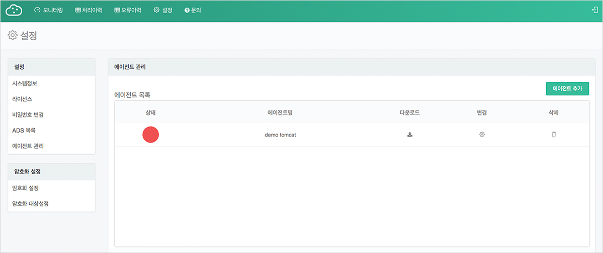2. WAS 서버에 에이전트 파일 업로드
다운로드한 에이전트 파일을 에이전트를 설치하려는 WAS 서버의 특정 디렉토리에 업로드합니다.
단, 이 파일은 WAS를 기동하는 계정이 읽을 수 있도록 권한이 부여되어야 합니다.
3. 에이전트 로그디렉토리 준비
Spice.cc에서 해당 에이전트의 로그를 사용하도록 설정했다면, 에이전트 로그디렉토리를 준비해야 합니다. 로그가 정상적으로 기록되게 하려면 이 디렉토리에 대해 WAS를 기동하는 계정에게 쓰기 권한이 부여되어야 합니다.
4. WAS 기동 파라미터 설정
[AgentID].zip파일을 WAS의 특정 경로에 압축 해제합니다.
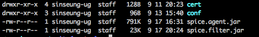압축해제한 파일 중 spice.filter.jar파일을 WAS LIB경로에 복사하여 library로 등록되도록 합니다.
WAS 기동 파라미터에 아래 내용을 추가합니다.
- - Dspice.home={압축해제Directory_절대경로} -javaagent:{에이전트파일_절대경로}
- · 압축해제Directory_절대경로 : 압축해제한 디렉토리 절대경로
- · 에이전트파일_절대경로 : 압축해제한 디렉토리 내의 spice.agent.jar파일의 절대 경로
압축파일을 /usr/data 경로에 해제하였다면 아래와 같이 추가해야 합니다.
- - Dspice.home=/usr/data -javaagent:/usr/data/spice.agent.jar
위의 파라미터를 추가하는 위치는 WAS 종류에 따라 달라지기 때문에 아래 표를 참조하여 추가합니다.
| WAS | Version | 설정파일 위치 | 설정방법 |
|---|---|---|---|
| Tomcat | 7.0, 8.0, 8.5, 9.0 | /bin/catalina.sh | JAVA_OPTS="-Dspice.home=/usr/data -javaagent:/usr/data/spice.agent.jar" |
| Jetty | 9.3 | /bin/jetty.sh | JAVA_OPTS="-Dspice.home=/usr/data -javaagent:/usr/data/spice.agent.jar" |
| Resin | 4.0, Pro 4.0 | /conf/resin.xml | <cluster id="app"> <server-default> <jvm-arg>-Dspice.home=/usr/data -javaagent:/usr/data/spice.agent.jar</jvm-arg> </server-default> ... </cluster> |
WAS 종류에 따라 web.xml파일에 SpiceFilter를 등록합니다.
| WAS | 수동등록 필요 여부 |
|---|---|
| Tomcat | N |
| Weblogic | Y |
| Jeus | Y |
| Resin | N |
| Jetty | Y |
web.xml적용 예제
<filter>
<filter-name>SpiceFilter</filter-name>
<filter-class>kr.co.spiceware.filter.SpiceFilter</filter-class>
</filter>
<filter-mapping>
<filter-name>SpiceFilter</filter-name>
<url-pattern>*.do</url-pattern>
</filter-mapping>
url-pattern부분은 적용할 WAS의 Servlet URL pattern에 따라 조정하여 등록합니다.
5. 에이전트 작동 확인
5.1 WAS 로그 확인
WAS 표준출력 로그 파일에 아래의 내용이 나타나면 WAS에 에이전트가 정상적으로 적용된 것입니다.
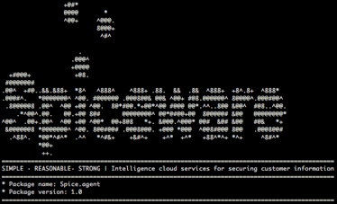5.2 에이전트 로그 확인
Spice.cc의 설정 > 에이전트 관리의 에이전트 설정에 로그디렉토리에 지정한 WAS서버의 디렉토리에서 spice-agent-YYYYMMDD.log 파일을 열어 아래와 같은 내용이 나타나면 에이전트가 정상작동 중인 상태입니다.
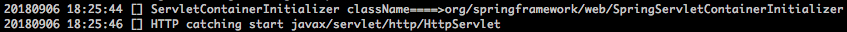5.3 에이전트 상태 확인
Spice.cc의 설정 > 에이전트 관리 화면에서 이 에이전트의 상태가 초록색이면 에이전트가 Spiceware 서버와 정상적으로 통신 중인 상태입니다.
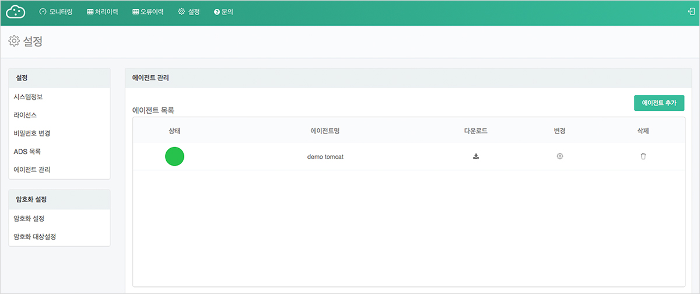Spice.cc 사용자 매뉴얼
spice.cc는 Spiceware On AWS의 구성서버들과 에이전트에 대한 모니터링, 에이전트 정보 관리, 암복호화 설정, 처리/오류 이력 조회 등을 수행할 수 있는 통합관리센터 입니다. CloudFormation Template 설치 매뉴얼의 마지막에 설치완료 및 관리 Web 접속 화면 하단에 보이는 URL 링크를 클릭하면 Spice.cc 화면이 로딩됩니다. Spiceware 운영담당자라면 이 주소에 자주 접속해야 하므로 북마크를 만들어 두는 것이 좋습니다.
1. 초기 환경설정
Spiceware On AWS를 설치한 후 초기환경을 구성하기 위해 필요한 정보를 입력합니다.
1.1 어드민 비밀번호 설정
Spiceware On AWS 설치 후 맨 처음 접속하면 나타나는 화면으로 Spice.cc의 어드민 계정에 대한 비밀번호를 설정합니다. 여기서 동일한 비밀번호를 2번 입력하고 다음 버튼을 클릭합니다. 이 설정과정이 완료된 후에 다시 Spice.cc에 접속하면 로그인화면이 나타나는데, 여기서 입력한 비밀번호를 이용해 로그인합니다.
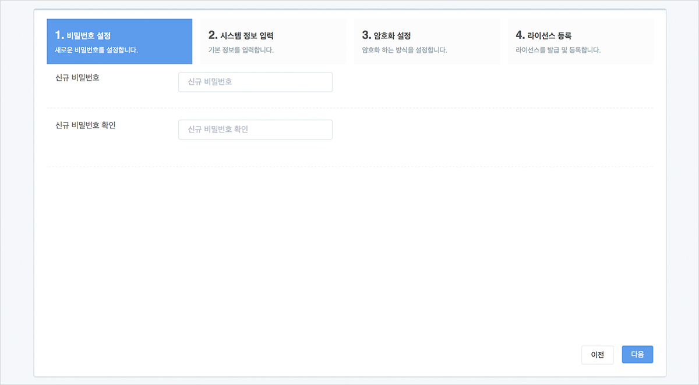1.2 시스템정보입력
시스템명과 도메인, 암호저장소(DB)에 대한 접속정보를 입력합니다. 시스템명과 도메인은 단순히 사용자가 식별하기 위해서 용도로만 사용되지만, 암호저장소는 실제로 암호화된 정보를 저장하고 조회하기 위해 사용되기 때문에 실제 DB에 대한 접속정보를 입력해야 합니다. 개인정보의 유출을 막기 위해선 여기서 입력하는 암호저장소 DB는 Spice.ads와 일부 인가된 사용자 외에는 접근이 불가능하도록 권한을 엄격히 통제해야 합니다.
-
- 입력필드
- · 시스템명 : 암복호화를 적용할 시스템의 이름
- · 도메인 : 암복호화를 적용할 시스템의 도메인
- · DB 종류 : DB 제품 종류
- · End Point : DB가 설치된 서버(EC2 등)의 도메인명 또는 IP
- · Port : DB가 listen하고 있는 포트(Spice.ads에서 이 포트로의 inbound 방화벽이 반드시 열려 있어야 합니다)
- · Database : DB 내에 생성되어 있는 데이터베이스 이름
- · ID : DB에 접속할 때 사용할 계정(반드시 테이블 생성권한이 있어야 합니다)
- · Password : 위에서 입력한 계정의 패스워드
1.3 암호화 설정
데이터 암호화에 대한 내용을 설정하고 다음 버튼을 클릭합니다. 단, 알고리즘은 처음에 설정하면 나중에 변경이 불가능하기 때문에 신중하게 선택해야 합니다.
-
- 입력필드
- · 암호키 자동 버전업 기간 설정 : 암호키 유출에 대비해 주기적으로 새로운 암호키를 생성하여 사용하도록 설정할 수 있는데, 어떤 주기로 새로운 암호키를 생성할 것인지 선택합니다.
- · 양방향 알고리즘 : 양방향은 평문을 암호화했다가 다시 원래의 평문으로 복호화할 수 있다는 것을 의미하며, 각 알고리즘에 대한 설명을 읽고 적합한 암복호화 알고리즘을 선택합니다.
- · 단방향 알고리즘 : 단뱡향은 원문을 암호화하면 그 암호화된 내용으로 원문을 다시 만들지 못 한다는 것을 의미합니다. 알고리즘 이름 뒤에 붙은 숫자가 올라갈수록 보안성이 높아지지만, 그만큼 암호화 결과가 커져 저장공간이 늘어나므로 이를 감안해서 선택합니다.
1.4 라이선스 등록
라이선스 발급 버튼을 클릭하면 새로운 창에서 Spice.io 홈페이지가 로딩되는데 거기서 로그인합니다. 이미 발급받았던 라이선스가 있다면 그 키를 복사해서 본 화면 아래 부분의 라이선스 등록 입력항목에 입력하고, 라이선스가 없다면 새로운 라이선스를 구매한 후 그 라이선스의 키를 복사해서 라이선스 등록에 입력한 후 완료 버튼을 클릭합니다.
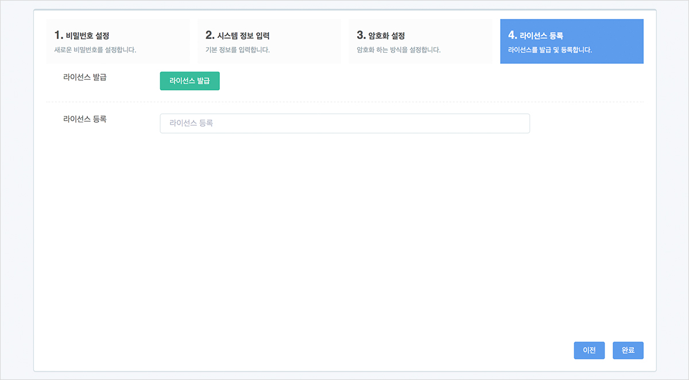1.5 초기설정 완료
1.4에서 완료 버튼을 클릭하면 지금까지 입력한 내용을 이용해 초기 설정 작업을 수행합니다. 4가지 단계에 대한 작업이 모두 완료되면 Spice.cc를 사용할 준비가 끝난 상태입니다.
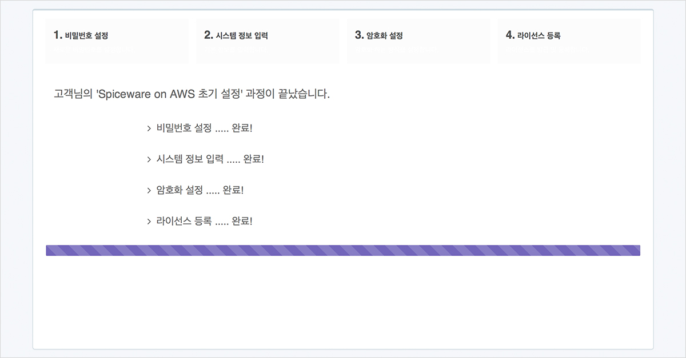2. spice.cc 사용
spice.cc를 통해서 Spiceware에서 제공하는 다양한 기능을 사용할 수 있도록 설정하고 Spiceware 각 서버의 상태를 확인하고 암복호화 상태를 모니터링합니다.
2.1 로그인
1.1에서 접속한 페이지에 접속해서, 비밀번호를 입력하고 로그인합니다.
2.2 모니터링
전체적인 Spiceware 시스템에 대한 상태를 확인하고, 암복호화 처리상태를 모니터할 수 있습니다.
- · 실시간 처리 성능 : 현재 수행되고 있는 암복호화 처리 성능을 확인합니다. 암복호화가 한 번 처리될 때마다 점이 하나씩 표시되며, X축은 처리시각이고 Y축은 소요된 시간을 나타냅니다.
- · 시간별 처리량 : 오늘의 매 시간당 암복호화 처리건수를 확인합니다.
- · 일별 처리량 : 금주의 일별 암복호화 처리건수를 확인합니다.
- · 월별 처리량 : 금년의 월별 암복호화 처리건수를 확인합니다.
- · 에이전트 및 ADS : 현재 등록되어 있는 에이전트와 Spice.ads 수와 활성화되어 있는 수를 표시합니다.
2.3 처리이력 조회
날짜로 기간을 지정해서 날짜, 에이전트, 클라이언트IP, URL 단위로 집계한 암복호화 처리건수를 조회합니다.
-
-표시항목
- · 날짜 : 암복호화 처리일자
- · 시스템이름 : 시스템이름
- · 에이전트이름 : 암복호화 요청 에이전트 이름
- · IP : 암복호화 대상 URL을 호출한 클라이언트 IP
- · UNIT : 암복호화 대상 URL
- · 암호화 처리횟수 : 위 단위에 따라 집계한 암호화 횟수
- · 복호화 처리횟수 : 위 단위에 따라 집계한 복호화 횟수
2.4 오류이력 조회
지정된 기간동안 Spiceware에서 발생한 오류를 조회합니다.
-
-표시항목
- · 타입 : 오류가 발생한 지점 또는 종류
- · IP : 오류가 발생한 서버의 IP
- · 내용 : 오류 내용(생략된 내용 옆의 확인 버튼을 클릭하면 전체 내용을 확인할 수 있습니다)
- · 발생일시 : 오류가 발생한 시간
2.5 시스템 정보
초기 설정 1.2에서 입력한 내용을 확인하고, 정보가 변경된 경우 수정하여 저장할 수 있습니다.
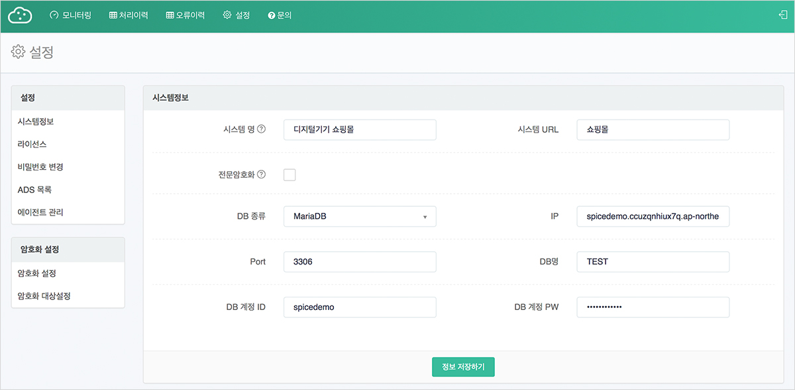2.6 라이선스정보 조회
현재 입력되어 있는 라이선스 정보를 조회할 수 있고, 라이선스가 만료된 경우 Spice.io 홈페이지에서 라이선스를 추가로 구매한 후 키를 여기에 입력하고 등록함으로써 라이선스를 연장할 수 있습니다.
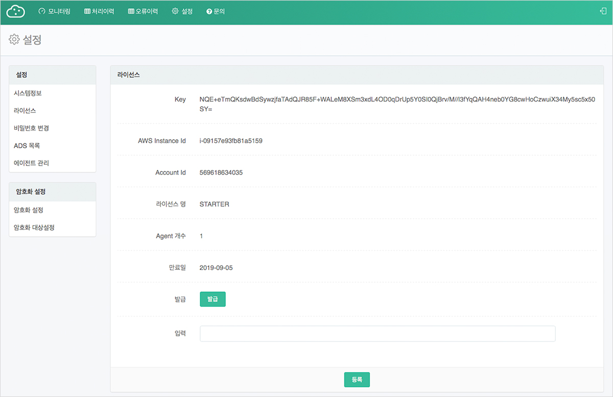2.7 어드민 비밀번호 변경
Spice.cc에 접속하는 어드민 계정의 비밀번호를 변경할 수 있습니다.
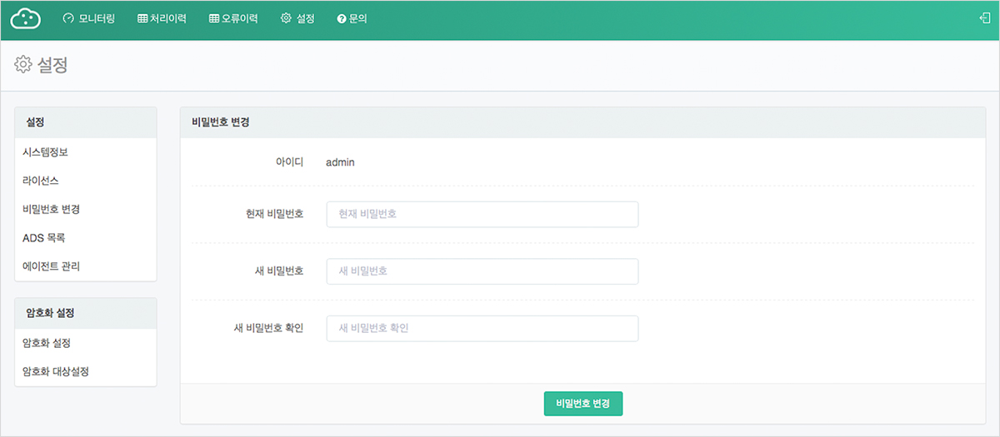2.8 ADS 목록
설치되어 있는 Spice.ads 목록과 상태, 상세정보를 조회합니다.
-
-표시항목
- · 상태 : Spice.ads의 현재 상태(초록색 : 정상, 빨간색 : 비정상)
- · IP : Spice.ads가 설치된 서버의 IP
- · Port : Spice.ads가 listen하는 Port
2.9 암호화 설정
암복호화 관련 설정을 확인하고 변경할 수 있습니다.
-
-설정항목
- · 알고리즘 : 초기설정 시 선택한 양방향 및 단방향 알고리즘(초기설정 후 변경 불가)
- · 자동 버전업 기간 : 암호키의 자동 버전업 주기 확인 및 변경
-
· 수집 : 에이전트에서 송수신되는 URL과 데이터 정보에 대한 수집여부를 설정
(수집된 정보를 바탕으로 필드에 대한 암복호화를 설정할 수 있으므로 처음에는 반드시 켜서 수집을 수행하도록 해야 합니다) -
· ADS 응답시간 제한 : 에이전트가 Spice.ads에 암복호화 요청을 보낸 후 응답을 기다리는 시간으로 이 때까지 응답을 수신하지 못 하면 암복호화 실패로 간주하고 원문을 그대로 사용합니다.
(단위 : 밀리세컨드) -
· HTTP 수집 유형 : 수집할 대상 URL의 접미어를 입력하고 수집을 켜면 해당 접미어를 포함한 URL만 수집합니다. 아무 값도 입력하지 않으면 전체 URL에 대해서 수집합니다.
접미어를 입력하고 콤마(,)나 엔터를 입력하면 자동으로 버튼 형태로 표시됩니다. 입력완료 후 꼭 저장 버튼을 클릭해야 합니다.
2.10 에이전트 관리
에이전트 목록과 각 에이전트의 현재 상태를 표시해 줍니다. 에이전트를 추가하거나 에이전트 정보를 변경하고, 에이전트 파일을 다운로드할 수 있습니다.
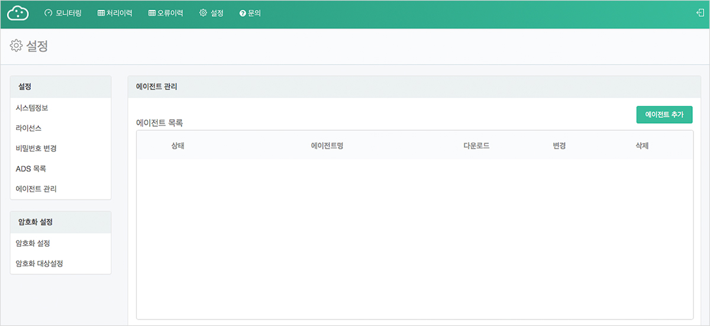- 에이전트 정보 추가
에이전트 관리 화면에서 에이전트 추가 버튼을 클릭해 에이전트 정보를 추가합니다. 에이전트 정보를 입력한 후에 저장 버튼을 클릭합니다.
-
- 입력항목
- · 에이전트명 : 에이전트를 구분할 수 있는 이름으로, WAS 인스턴스마다 하나씩 설치되므로 WAS 인스턴스 정보를 함께 입력해도 됩니다.
- · 시스템 JDK : 에이전트를 설치할 WAS 인스턴스에서 사용하는 JDK 버전
- · WAS IP/WAS NAP IP : 에이전트를 설치할 WAS가 설치된 서버의 프라이빗 IP
- · WAS LIB 경로 : WAS에 포함된 디렉토리 중 Servlet API Jar 파일이 포함된 디렉토리의 절대경로
- · 에이전트 로그사용여부 : 에이전트의 로그를 기록할지 여부
- · 에이전트 로그보관일수 : 에이전트 로그를 보관하는 최대일수
- · 에이전트 로그디렉토리 : 에이전트 로그 파일을 생성할 디렉토리로 WAS를 기동하는 계정이 디렉토리에 대한 쓰기 권한을 갖고 있어야 합니다.
- 에이전트 정보 추가 후 목록
아직 WAS에 에이전트를 설치하지 않았고, 단순히 Spice.cc에서 에이전트 정보만 등록한 상태이기 때문에 상태는 빨간색으로 표시됩니다.
- 에이전트 파일을 다운로드해서 WAS에 적용하는 과정은 WAS 종류와 버전에 따라 다르며, 이에 대한 가이드는 에이전트 설치 매뉴얼을 참조합니다.
2.11 암호화 대상 설정
암호화 설정에서 수집을 켜 두고, 에이전트를 WAS 정상적으로 설치해서 작동시키면 에이전트는 서버에 송수신 정보를 저장합니다. 그러므로, 암호화 수집을 켜고 에이전트를 정상적으로 설치하고 암호화 대상 URL을 호출하거나 SQL이 실행해서 정보가 수집된 후에만 본 암호화 대상 설정 작업을 수행할 수 없습니다. 암호화 대상 설정에선 이렇게 수집된 정보를 바탕으로 송수신 파라미터나 DB 테이블의 컬럼을 지정해서 암호화를 켜도록 할 수 있습니다.
2.11.1 HTTP 암호화 수집목록검색
에이전트를 선택하거나 검색어 등을 입력해서 검색하면 수집목록이 나타납니다. 여기서 암호화 대상 파라미터가 있는 URI의 설정 버튼을 클릭합니다.
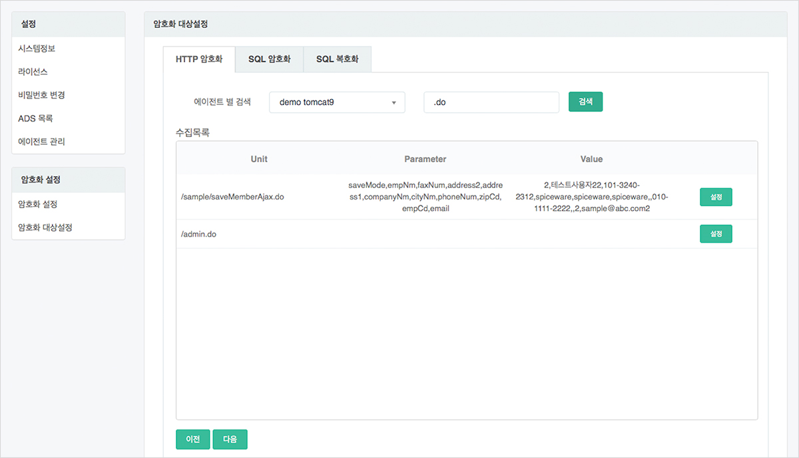2.11.2 HTTP 암호화 대상필드 설정
- 일반 폼 형태 데이터의 암호화 설정하기
계층 구조가 아닌 일반 폼 형태의 데이터는 아래와 같이 리스트 형태로 표시되며, 이 중 암호화하고자 하는 필드를 선택해서 설정합니다.
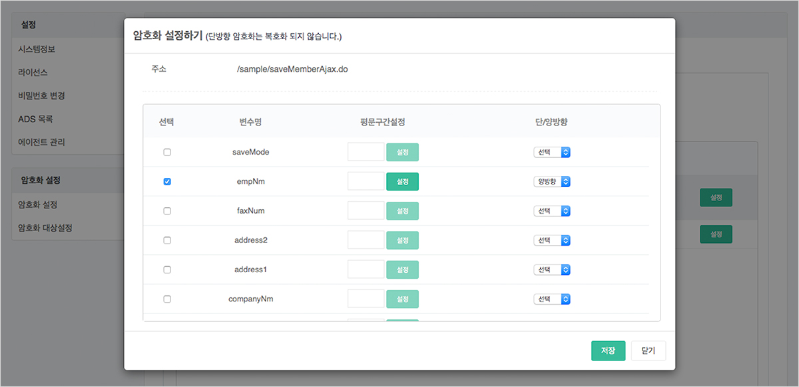- 계층 구조 데이터의 암호화 설정하기
JSON이나 XML 등 계층 구조가 있는 데이터는 아래와 같이 트리 형태로 표시되며, 트리에서 암호화하고자 하는 노드를 선택해서 설정합니다.
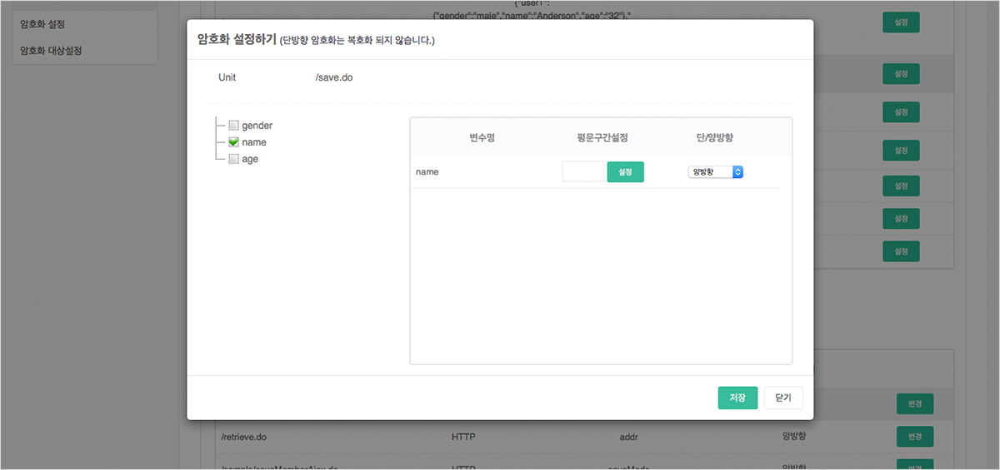각 암호화 대상 필드에 대한 상세설정을 아래와 같이 진행하고 저장 버튼을 클릭합니다.
- 변수명 : 수집된 URI에서 검색된 변수명 목록이 보이고, 암호화하고자 하는 변수의 체크박스에 체크합니다.
- 변수명 : 수집된 URI에서 검색된 변수명 목록이 보이고, 암호화하고자 하는 변수의 체크박스에 체크합니다.
-
글자범위 방식
- · 문자의 인덱스를 기준으로 시작인덱스 ~ 끝인덱스 형태로 입력하며, 인덱스는 0부터 시작합니다.
- · 인덱스에 마이너스(-) 숫자를 사용할 수 있는데, 문자열의 오른쪽 끝부터 n번째 인덱스를 의미합니다.
- · 범위의 앞쪽 입력필드는 반드시 입력해야 하고, 뒤쪽 입력필드를 입력하지 않으면 자동으로 오른쪽 끝까지로 처리합니다.
-
· 문자열이 123456789 일 경우
- 앞 2, 뒤 없음 : 앞에서 2번째 문자부터 마지막 문자까지 평문 표시
> 결과 : !$3 456789 #암호화문자열#!
- 앞 2, 뒤 5 : 앞에서 2번째 문자부터 5번째 문자까지 평문 표시
> 결과 : !$345#암호화문자열#!
- 앞 -3, 뒤 없음 : 뒤에서 3번째 문자부터 마지막 문자까지 평문 표시
> 결과 : !$789#암호화문자열#!
- 앞 -5, 뒤 -2 : 뒤에서 5번째 문자부터 2번째 문자까지 평문 표시
> 결과 : !$567#암호화문자열#!
-
단어범위 방식
- · 단어구분자를 기준으로 나눈 단어의 인덱스를 기준으로 시작인덱스 ~ 끝인덱스 형태로 입력하며, 인덱스는 0부터 시작합니다.
- · 단어구분자는 스페이스( ) 뿐만 아니라 다양한 문자를 사용할 수 있습니다.
- · 인덱스에 마이너스(-) 숫자를 사용할 수 있는데, 단위 단어의 오른쪽 끝부터 n번째 인덱스를 의미합니다.
- 범위의 앞쪽 입력필드는 반드시 입력해야 하고, 뒤쪽 입력필드를 입력하지 않으면 자동으로 오른쪽 끝까지로 처리합니다.
-
문자열이 ABCD-EFGH-IJKL-MNOP-QRST이고, 단어구분자가 하이픈(-)일 경우
- 앞 2, 뒤 없음 : 앞에서 2번째 단어부터 마지막 단어까지 평문 표시
> 결과 : !$ JKL-MNOP-QRST #암호화문자열#!
- 앞 1, 뒤 4 : 앞에서 1번째 단어부터 4번째 단어까지 평문 표시
> 결과 : !$EFGH-IJKL-MNOP#암호화문자열#!
- 앞 -3, 뒤 없음 : 뒤에서 3번째 단어부터 마지막 단어까지 평문 표시
> 결과 : !$IJKL-MNOP-QRST#암호화문자열#!
- 앞 -3, 뒤 -2 : 뒤에서 3번째 단어부터 2번째 단어까지 평문 표시
> 결과 : !$IJKL#암호화문자열#!
- 단/양방향 : 암호화한 후 원문을 볼 필요가 없으면 단방향을, 암호화한 후 복호화할 수 있어야 한다면 양방향을 선택합니다. 보통 패스워드만 단방향을 선택하고, 나머지는 대개 양방향을 선택합니다.
2.11.3 HTTP 암호화 대상목록
아래와 같이 설정된 HTTP 암호화 대상목록을 확인할 수 있습니다. 암호화 설정을 변경하고 싶다면 오른쪽의 변경 버튼을 클릭합니다.
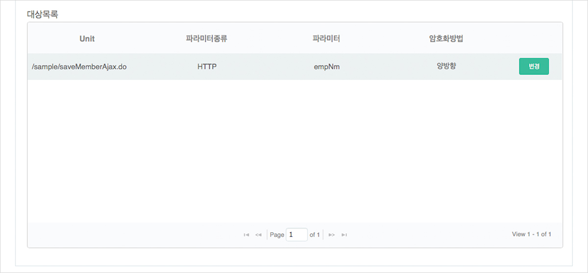2.11.4 SQL 암호화 수집목록 검색
에이전트를 선택하거나 검색어 등을 입력해서 검색하면 수집된 SQL 목록이 나타납니다. 여기서 암호화 대상 컬럼이 있는 INSERT/UPDATE SQL의 설정 버튼을 클릭합니다.
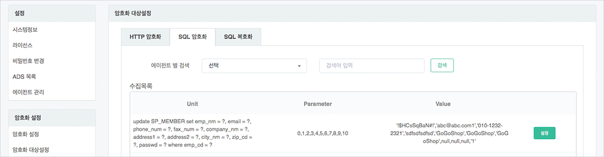2.11.5 SQL 암호화 대상필드 설정
- 변수명 : SQL의 물음표 갯수만큼 0부터 시작하는 숫자로 표시되는데, 표의 행을 클릭하면 왼쪽의 SQL에서 해당 순서의 물음표가 노란색으로 표시됩니다. 해당 물음표가 암호화하고자 하는 테이블 컬럼에 해당한다면 그 행의 체크박스에 체크합니다.
- 평문범위설정 : HTTP 암호화와 동일한 방식이므로 2.11.2의 설명을 참조합니다.
- 단/양방향 : 암호화한 후 원문을 볼 필요가 없으면 단방향을, 암호화한 후 복호화할 수 있어야 한다면 양방향을 선택합니다. 보통 패스워드만 단방향을 선택하고, 나머지는 대개 양방향을 선택합니다.
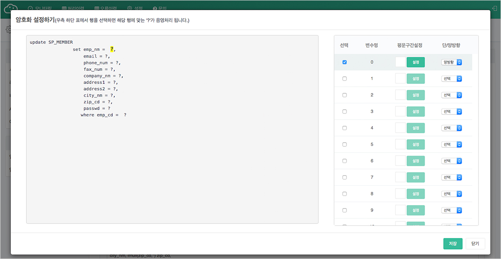2.11.6 SQL 암호화 대상목록
아래와 같이 설정된 SQL 암호화 대상목록을 확인할 수 있습니다. 암호화 설정을 변경하고 싶다면 오른쪽의 변경 버튼을 클릭합니다.
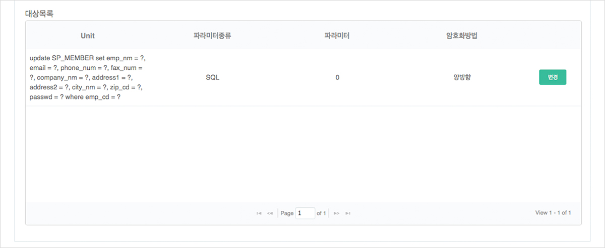2.11.7 SQL 복호화 수집목록 검색
에이전트를 선택하거나 검색어 등을 입력해서 검색하면 수집된 SQL 목록이 나타납니다. 여기서 암호화 대상 컬럼이 있는 SELECT SQL의 설정 버튼을 클릭합니다.
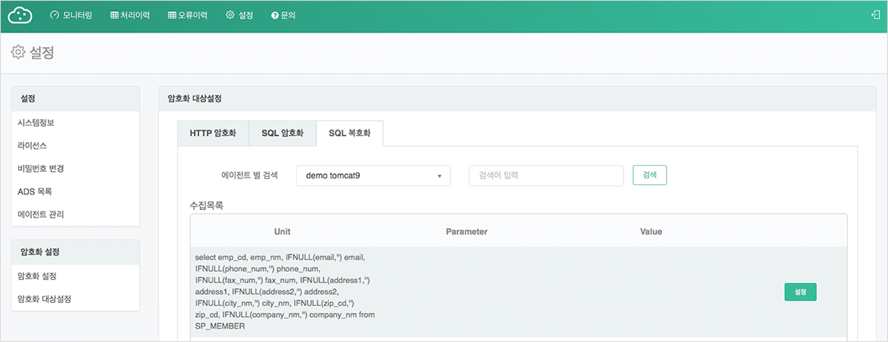2.11.8 SQL 복호화 대상필드 설정
위에 보이는 SQL의 SELECT절에서 복호화 대상컬럼명을 복사해서 아래의 컬럼설정 항목에 붙여 넣고 콤마(,)나 엔터키를 입력하면 하나씩 나눠서 입력됩니다. 단, 컬럼명에 alias를 사용했다면 원래 컬럼명 대신 alias를 입력해야 합니다.
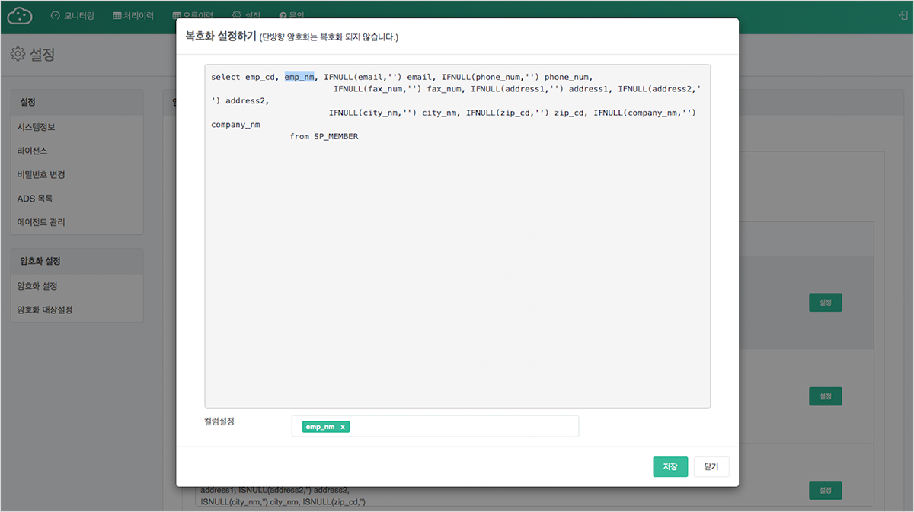2.11.9 SQL 복호화 대상목록
아래와 같이 설정된 SQL 복호화 대상목록을 확인할 수 있습니다. 암호화 설정을 변경하고 싶다면 오른쪽의 변경 버튼을 클릭합니다.
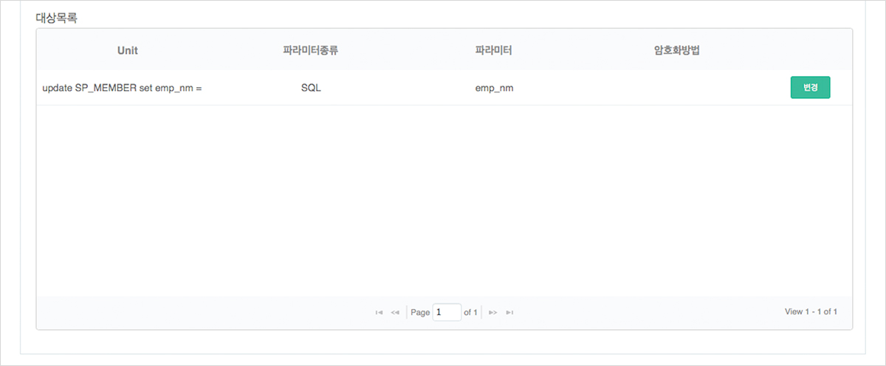2.11.10 암복호화 정상작동 확인
- 암복호화를 적용해도 화면에서 정보를 입력하고 저장한 후에 다시 조회할 때 보이는 데이터는 예전과 동일합니다. Spiceware 에이전트가 입력된 정보를 가로채서 암호화한 후 다시 그 자리에 넣어주면 그 값이 DB에 저장되고, 암호화된 데이터를 조회할 때에 또 에이전트가 암호화된 정보를 가로채서 복호화해서 넣어 주면 그 내용이 화면으로 전달되기 때문입니다. 위의 설정을 예로 들어 설명하면, EMP_NM 컬럼에는 원래 이름이 들어가야 하지만, 암호화를 적용하면 이 컬럼에 비식별화된 정보가 저장되고 실제 데이터는 암호화되어 암호저장소에 분리되어 저장됩니다. 그러므로, 암복호화가 정상작동하는지 확인하려면 원래 테이블과 암호저장소에 데이터가 저장되는지 확인해야 합니다.
- EMP_NM 컬럼 정보 확인 : 화면에서 원래 입력한 내용 대신 !$HCsslV2E#! 와 같은 내용이 저장되었는지 확인합니다.
- 암호저장소 확인 : tb_crypt_data_C0001 테이블의 enc_key 컬럼 값이 HCsslV2E인 행이 있는지 조회합니다.
- 원래 테이블과 암호저장소 테이블에서 암호화된 정보를 확인했다면 Spiceware의 암복호화 기능이 정상작동한다는 것을 의미합니다.
Spiceware on AWS 설치
AWS 환경에 Spiceware On AWS가 신규 VPC 형태로 자동설치됩니다. 이와 함께 설치 중에 입력한 기존 VPC의 정보를 이용해 Spiceware VPC와의 VPC 피어링까지 자동으로 구성되어 별도의 구성 없이 두 VPC간 통신이 가능합니다. VPC 피어링을 통해 기존 VPC와 Spiceware On AWS의 VPC가 통신함으로써 외부 네트워크에 개인정보가 유출될 위험을 사전에 차단합니다.
설치 시 생성되는 AWS 리소스는 다음과 같습니다.
- · VPC : Spiceware On AWS가 설치되는 대상 VPC
- · NAT게이트웨이 : Private 영역의 인스턴스가 외부와 연결하기 위한 게이트웨이
- · VPC 피어링 : 기존 어플리케이션이 설치된 VPC와 연결하기 위한 Peering
- · EC2 : 관리용 Web, Key관리 서버, 암호화 서버
- · Auto Scaling 그룹 : 암호화 서버의 부하에 따라 자동 Scaling하기 위한 그룹
- · RDS : 관리용 Data를 저장하기 위한 DB
- · I AM : 키 백업을 위한 사용자 생성
- ·S3 Bucket : 키 백업 저장소
1. CloudFormation을 통한 제품 설치
제공된 CloudFormation 템플릿을 통해 Spiceware On AWS를 자동 설치합니다.
1.1 Spiceware on AWS 설치 > CloudFormation 설정
CloudFormation을 이용해 스택을 생성하기 위해서는 미리 구성된 CloudFormation 정의 파일이 필요합니다. 이 파일은 Spiceware 홈페이지(http://www.spiceware.io) 에서 상단 메뉴의 설치 > INSTALL 버튼을 통해 고객님의 계정에 Spiceware on AWS 를 설치할 수 있습니다.
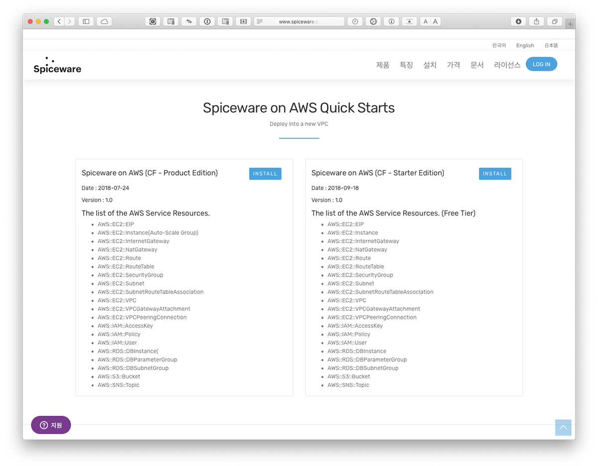INSTALL 버튼을 누르면 자동으로 AWS Console 로그인으로 연결되고, AWS Console의 로그인 세션이 있는 브라우저에서 Spiceware 를 실행했다면,바로 CloudFormation Stack 생성 페이지로 연결됩니다.
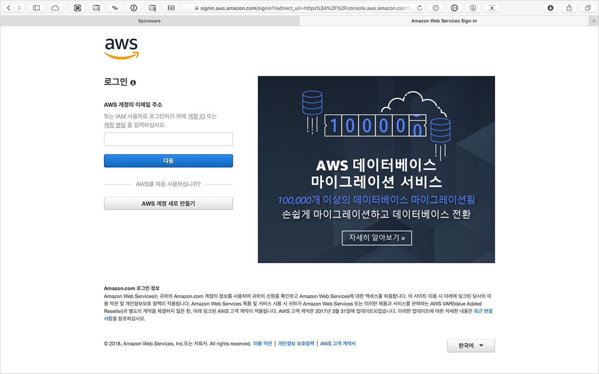우측 하단의 다음(Next) 버튼을 클릭합니다
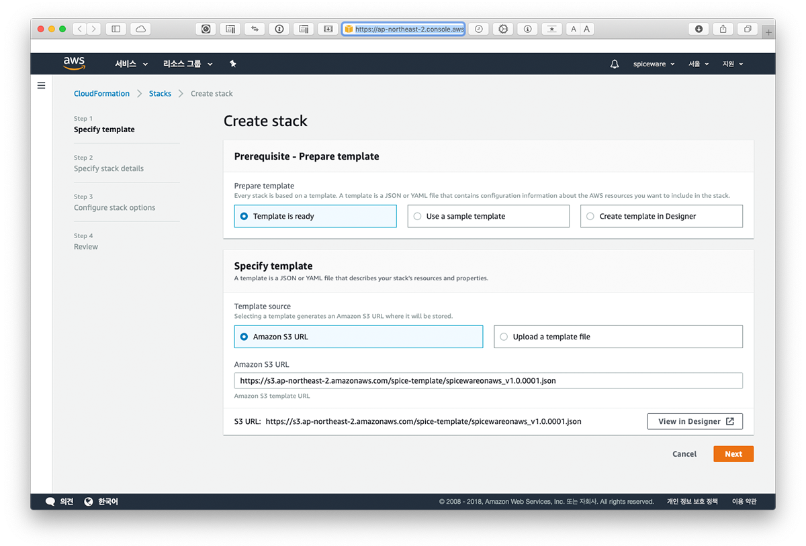1.2 CloudFormation 세부 정보 지정
1.2.1 세부 정보 지정
- · 스택 이름 : 생성할 스택의 이름을 지정합니다. 차후 일괄 삭제나 업데이트를 진행할 경우 해당 스택이름을 이용해 일괄 처리가 가능합니다.
1.2.2 파라미터 > Spiceware On AWS (VPC Peering/Accepter)
Spiceware는 고가용성을 위해 ADS와 관리용DB를 이중화 환경으로 구성합니다. 이를 위해 반드시 Availability Zone #1과 #2는 다르게 입력해야 합니다.
Availability Zone #1과 #2에 설치되는 관리용DB는 AWS RDS로 구성되며, 두 DB 사이에 데이터 복제가 자동으로 수행되며, RDS에는 클러스터 방식으로 연결합니다.
- · VPC Subnet : 생성할 VPC의 서브넷을 설정합니다. 디폴트는 188.0.0.0/16이며 VPC 피어링을 할 기존 운영 WAS가 설치된 VPC의 Subnet의 IP대역과 중복된다면 변경하시기 바랍니다. VPC 피어링 시 상대 VPC에 Private IP로 접근하기 때문에 Subnet의 IP대역이 중복되면 통신이 불가능합니다.
- · Public Subnet : CC가 위치 할 Subnet을 설정합니다.
- · Availability Zone #1 : ADS/관리용DB가 설치될 Zone 1을 선택합니다.
- · Private Subnet in AZ #1 : Zone 1에 할당할 Private Subnet을 지정합니다.
- · Availability Zone #1 : ADS/관리용DB가 설치될 Zone 1을 선택합니다.
- · Availability Zone #2 : ADS/관리용DB가 설치될 Zone 2를 선택합니다.
- · Private Subnet in AZ #2 : Zone 2에 할당할 Private Subnet을 지정합니다.
- · Spiceware CC type (EC2) : CC가 설치될 EC2 서버의 타입을 선택합니다.
- · Spiceware ADS type (EC2) : ADS의 EC2 서버의 타입을 선택합니다.
- · Spiceware DB type (EC2) : 관리용 DB의 인스턴스 타입을 선택합니다.
1.2.3 파라미터 > Target System VPC (VPC Peering/Requester)
- · VPC ID : 암호화 적용 대상 어플리케이션이 위치한 VPC ID를 입력합니다.
- · VPC Subnet : 암호화 적용 대상 어플리케이션이 위치한 VPC의 Subnet을 입력합니다.
- · RouteTable Id : 암호화 적용 대상 어플리케이션이 위치한 VPC의 RouteTable를 입력합니다.
1.2.4 파라미터 > Administrator
- · Inbound IP : Spice.cc에 접근할 사용자의 IP 대역(CIDR형식)을 입력합니다.
- · Email : 스택 관련 알림이 발생할 경우 Mail을 전송할 수신 메일주소를 입력합니다.
입력이 완료되면 우측 하단의 다음(Next) 버튼을 클릭합니다.
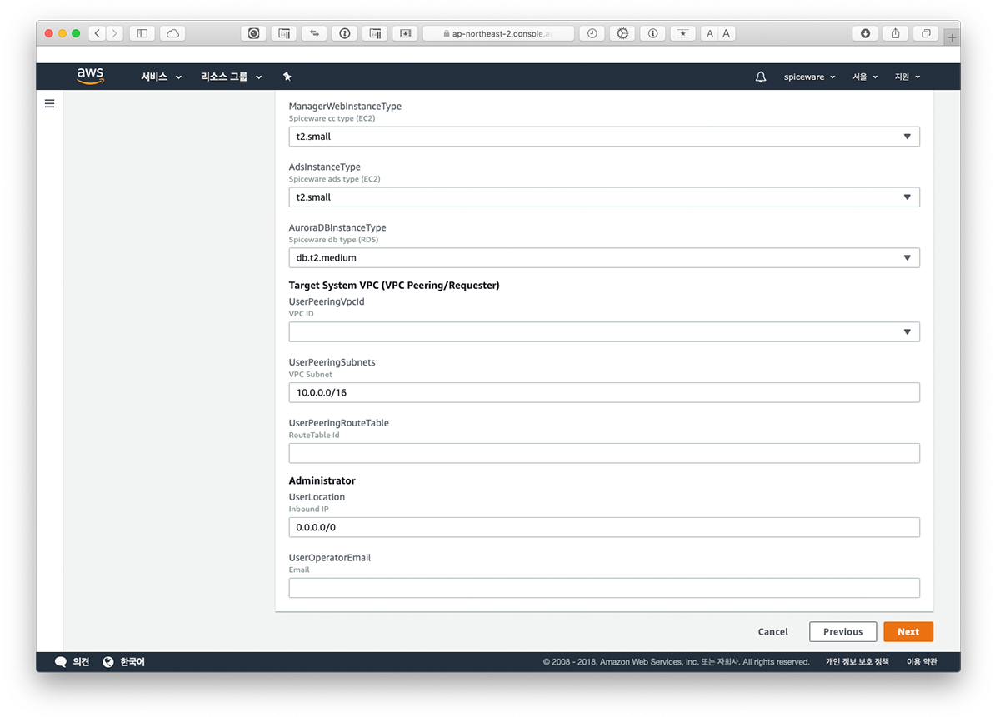참고) 대상 어플리케이션이 설치된 VPC에서 RouteTable ID 및 Subnet 확인 방법
서비스 > VPC 선택 후 라우팅 테이블 화면에서 대상 VPC에 설정된 라우팅테이블 ID, VPC Subnet을 확인하여 설정에 입력합니다.
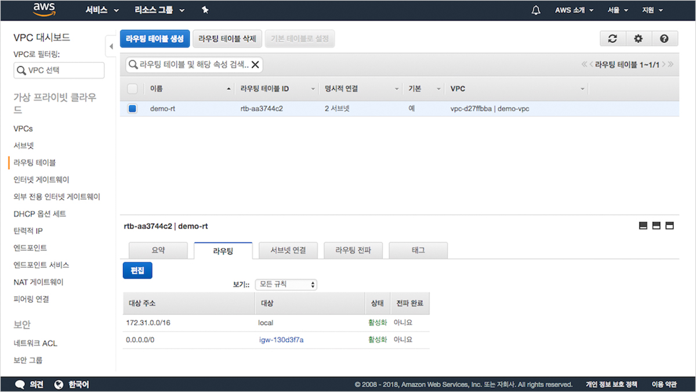1.3 스택 생성 옵션
스택생성 관련 옵션을 설정하는 페이지로, Spiceware 설치를 위해 입력할 옵션은 없습니다. Spiceware 설치 이외의 용도로 옵션 추가가 필요하면 입력하고, 그렇지 않으면 그냥 다음(Next) 버튼을 클릭합니다
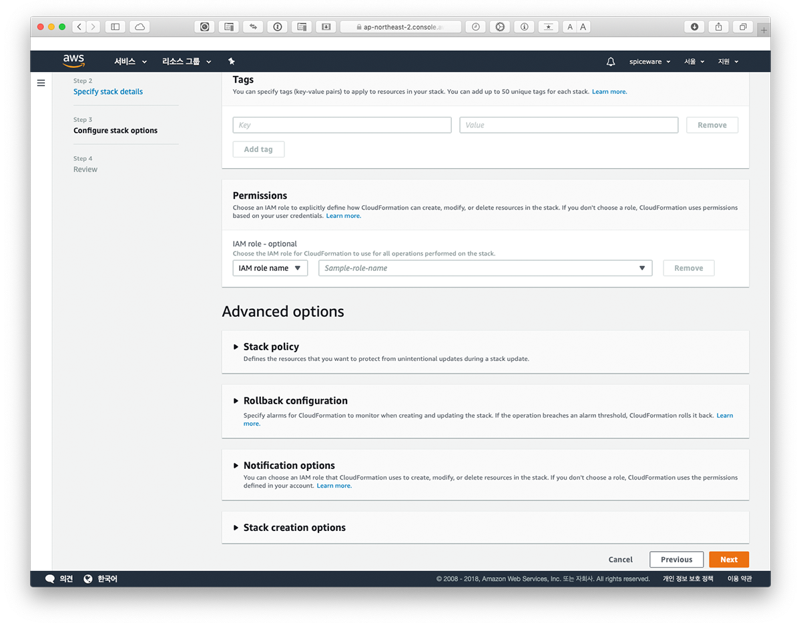1.4 CloudFormation 검토
지금까지 설정한 내용들 (Specify stack details)을 검토합니다.
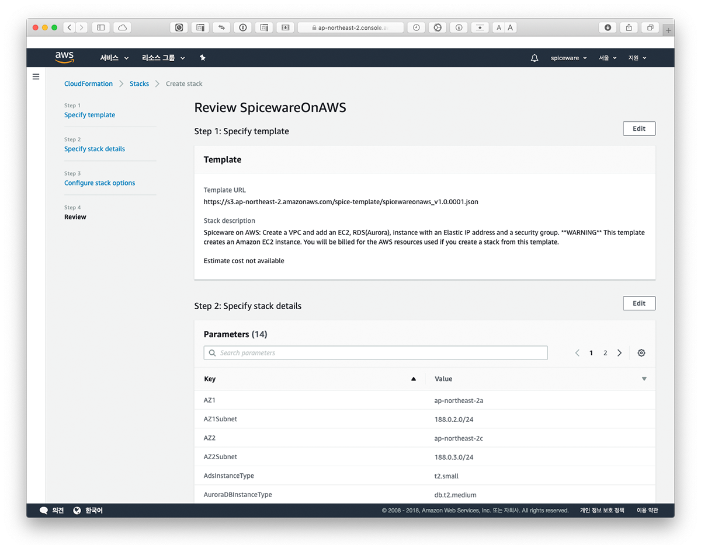Spiceware on AWS에서 사용 될 암호키를 저장하기 위해 (Spiceware에는 별도의 자동화된 KMS 기능이 있습니다.)
사용할 IAM 리소스 생성을 승인하도록 화면 하단의 체크박스를 체크합니다.(승인하지 않으면 설치를 진행할 수 없습니다.) 그리고, 우측 하단의 생성 버튼을 클릭하여 솔루션을 설치를 시작합니다.
1.5 솔루션 설치 진행
Spiceware On AWS의 스택 생성에는 20분 정도가 소요됩니다. 설치 중에는 아래와 같이 스택의 상태가 CREATE_IN_PROGRESS로 표시됩니다.
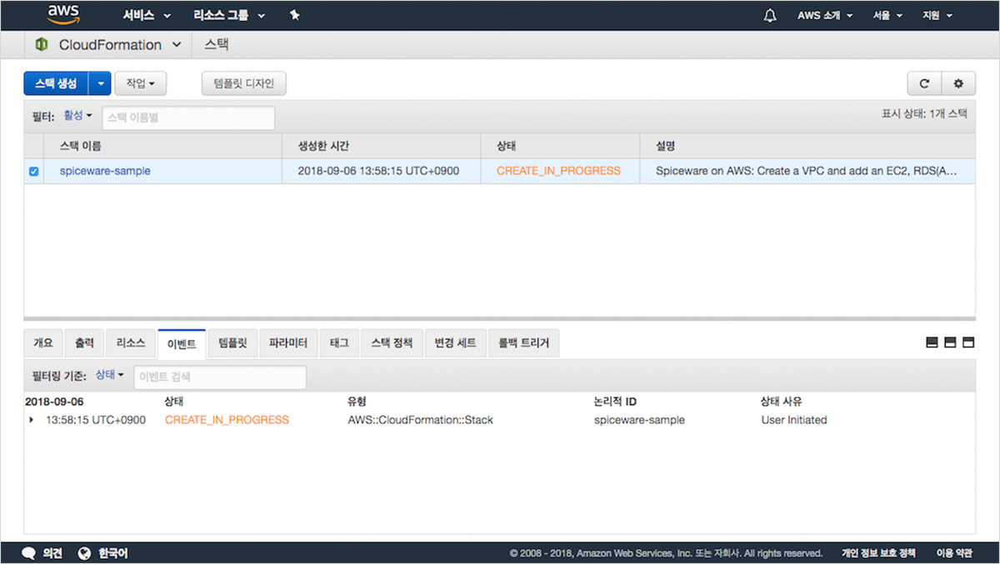1.6 설치 완료 및 관리 Web 접속
설치가 정상적으로 완료되면 상태가 CREATE_COMPLETE로 표시됩니다. 하단 출력 탭의 URL의 값에 표시된 링크를 클릭하면 Spice.cc 화면으로 이동합니다.
(Spiceware 운영담당자는 자주 접속하는 페이지로 웹브라우저에 북마크를 생성해 두는 것이 좋습니다.)
여기서 암호화 관련 설정 및 모니터링을 할 수 있습니다.
Spice.cc 사용에 관한 자세한 내용은 CC 사용자 매뉴얼을 참고하시기 바랍니다.
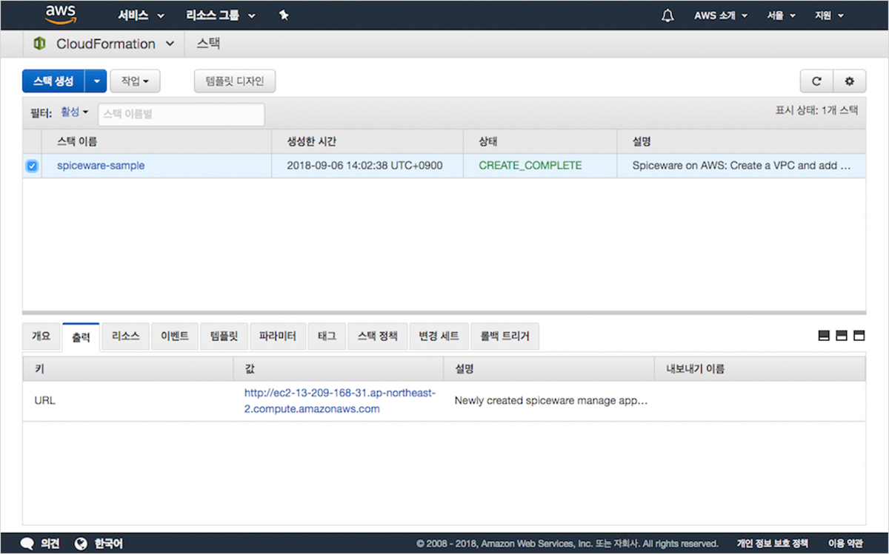1.7 피어링 연결
생성된 피어링 연결에서 사용자의 암호화 저장소 접속을 위해 DNS확인 허용 처리를 합니다.
AWS메뉴에서 VPC->피어링 연결을 클릭합니다.
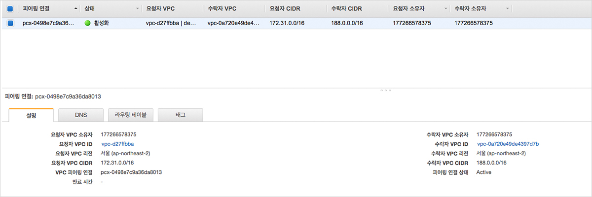CloudFormation을 통해 생성된 피어링 연결을 선택하고 작업에서 DNS설정 편집을 클릭합니다.
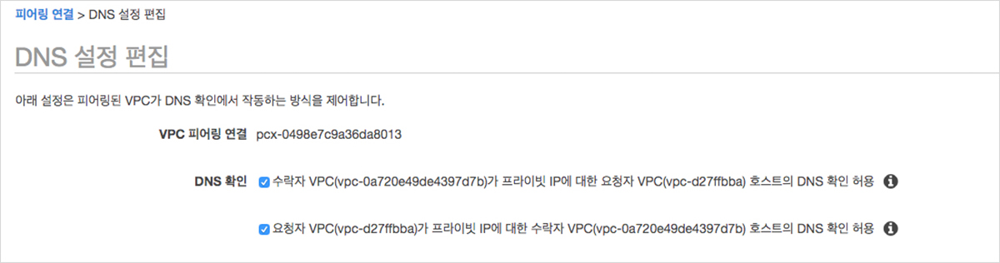DNS 확인 부분에서 수락자,요청자 VPC호스트의 DNS확인 허용을 체크한 후 저장 합니다.
1.8 설치 확인
설치가 완료된 후에 AWS EC2 인스턴스 페이지에서 아래 그림과 같이 인스턴스가 생성되어야 합니다.
- · Spiceware ADS : spice.ads의 EC2 인스턴스(이중화로 구성되기 때문에 인스턴스가 2개)
- · Spiceware Key : spice.ks의 EC2 인스턴스
- · Spiceware cc : spice.cc의 EC2 인스턴스
또한 Amazon RDS 인스턴스 페이지에서 아래 그림과 같이 2개의 인스턴스가 생성되어야 하고
- · spiceware-aurora-db1
- · spiceware-aurora-db2
Amazon RDS 클러스터 페이지에는 아래의 클러스터가 생성되어야 합니다.
- · spiceware-aurora-cluster